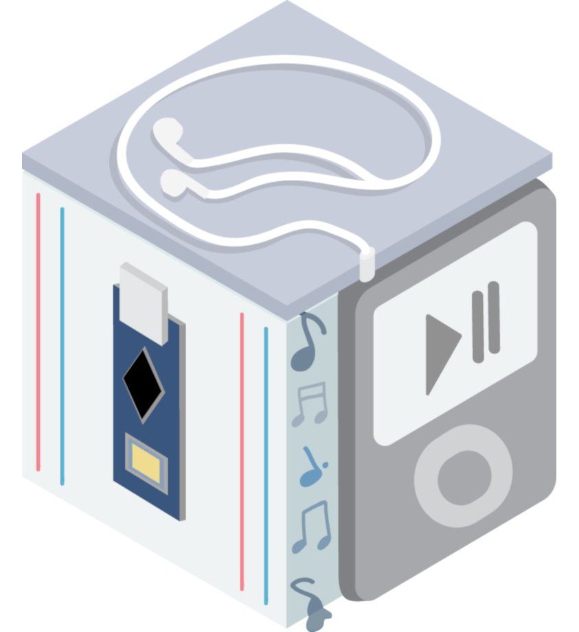
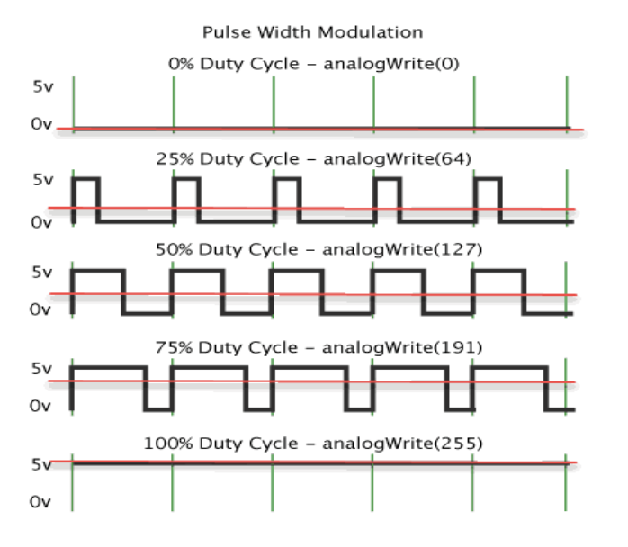
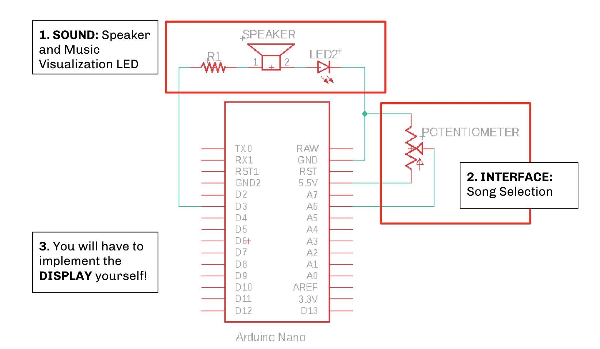
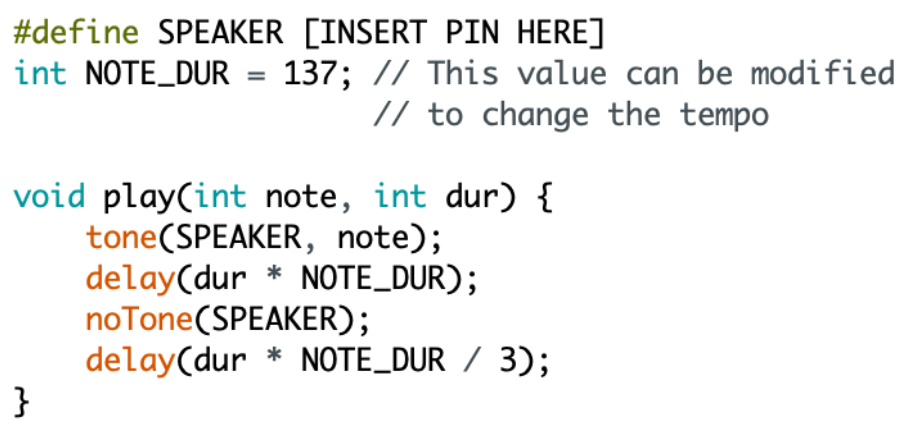
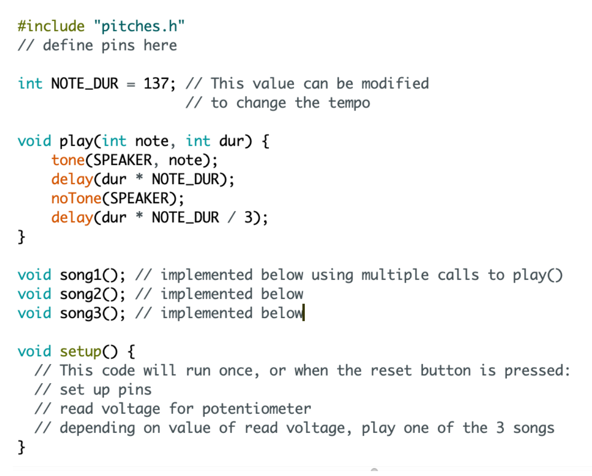

iPoduino: an Arduino Music Player

About this Project
In this project, you will be making an iPod Arduino Music Player. It will contain 3 subsystems: a speaker that plays programmable music of your choice, a potentiometer interface that allows users to select 1 of 3 songs, and a display (which you design!) that indicates which song will play.
Lecture Slides
Prerequisites
Skills Learned
- Digital/Analog signals
- Pulse Width Modulation (PWM)
- Intermediate Arduino programming
- Using library files
Parts List
| Part | Quantity | Estimated Cost | Example Vendor |
|---|---|---|---|
| Arduino Nano | 1 | $4.00 | Amazon |
| Mini USB Cable | 1 | $1.80 | Mouser |
| Breadboard | 1 | $1.50 | Amazon |
| Speaker | 1 | $0.85 | Digikey |
| Potentiometer | 1 | $1.00 | Adafruit |
| 82 Ohm Resistor (for Speaker) | 2 | $0.03 | Digikey |
In addition to the listed parts, you’ll also want to order assorted LEDs and resistors so that members can implement their own display designs.
Note: The listed speakers do NOT come pre-soldered. You will need access to a soldering station to solder the two leads yourself.
Total estimated cost: $9.21 per member + assorted parts for display
If reusing Arduino/MiniUSB/Breadboard: $1.91 per member + assorted parts for display
Project Specification
In order build our own iPoduino and program a song of our choice on it, we will develop it subsystem by subsystem. But first, we will build a quick demo to demonstrate the magic of PWM!
Checkpoint 1: Manually Create PWM
Before we start creating our iPod, let’s test your understanding of PWM.
A quick recap: our Arduino Nano is not capable of producing true analog signals. Rather, it is only capable of producing digital outputs (either HIGH or LOW, nothing in between). However, by rapidly alternating between HIGH and LOW for a particular proportion of time (duty cycle), we can simulate an analog voltage!

As seen in the above figure, a duty cycle of 50% means that the signal is HIGH half the time and LOW half the time. This equations to an analog voltage value that is 50% of HIGH. By varying the duty cycle, we can also vary the resulting analog output. This is in fact what happens every time we call the analogWrite(int x) function: the integer parameter x gets mapped to a duty cycle!
Now onto the assignment:
You will need to control the brightness of an LED by generating a 1 kHz PWM square wave (1 kHz corresponds to one wave every 1000 microseconds). Think about what parameters you can change that will correspond to a change in the LED’s brightness.
You’ll be restricted to using only two functions in your loop():
- digitalWrite(pin#)
- delayMicroseconds(#us)
To get checked off: create 3 different Arduino sketches, with each one clearly corresponding to a different brightness level.
Checkpoint 2: Sound Check
It’s time to build our iPoduino! The schematic is shown below for convenience. Note that the display interface that tells the user which song will play is not shown (since you’ll design it yourself!).

For the first part of the project, you will be programming your own song to play through a speaker. To do this, there are a few helpful Arduino functions:
- tone(pin, frequency): generates a 50% duty cycle PWM square wave at specified frequency.
- noTone(pin): stops PWM wave generated by tone()
However, we’ve simplified the use of the two functions above for you by writing the following helper function, play():

Copy this code into the top of your program, putting your speaker output pin in the indicated field. This function takes a note frequency and its duration as input, and sends a PWM signal to the output pin aliased as SPEAKER.
Please also download one of the following files and place it in the same folder as your Arduino iPod sketch:
- pitches.h - includes all notes
- basicpitches.h - includes only one octave for simplicity’s sake
In your main Arduino iPod sketch, write #include “pitches.h” at the top of your program. These files include note frequencies (in Hz) represented by their common note name (e.g. 262Hz can now be called as NOTE_C4, with 4 indicating the octave number).
Now, you will be able to play notes in the following format:
play(NOTE_C4, 4)—> play middle C for 4 note durations- an n-beat rest can be programmed using
delay(NOTE_DUR*n) - By making repeated calls to play(), we can play songs through our speaker!
To get checked off: write a song (minimum 10 notes) and play it through your speaker. The song should play on start-up and when the reset button in the center of the Arduino is pressed. We encourage you to get creative and show us something cool! E-mail us at outreach@ieeebruins.com! :)
For some inspiration: Despacito.h. Copy and paste into your code and call Despacito() to see it go!
Checkpoint 3: Interface
For the next portion of the project, you will be implementing a potentiometer interface. Depending on what voltage is read from the potentiometer when the reset button is pressed, you will need to be able to switch between at least 3 songs. This means you’ll have to program more songs! Pseudocode for this portion is pictured below:

It might be helpful to create a separate function for each programmed song, to make your code more organized. Additionally, think about this: if a song is only being played when the reset button is pressed, where in our Arduino code should the songs be played?
To get checked off: be able to play 3 different songs by turning the Potentiometer dial and pressing the reset button.
Checkpoint 4: Display
Alright, at this point you’ve accomplished quite a bit! You’ve programmed at least 3 songs, and can switch between them by turning your potentiometer dial and pressing the on-board reset button. However, which potentiometer settings correspond to which songs is a bit of a guessing game, since we don’t have real-time feedback until the button is already pressed.
Much like a real iPod has a visual display indicating which song we are selecting, we’ll add a display to our iPoduino! Once your iPoduino is done playing music, it should indicate which song will play next when the reset button is pressed again. When your iPoduino is playing music, it need not display anything. It’s up to you to implement this, as there are multiple ways of going about this. For example, we could represent different songs with different colors, different brightnesses, etc.
To get checked off and complete your iPoduino: demo your fully functional Arduino iPod with the display system you designed.
Further Understanding
Think about each of our 3 subsystems: sound, interface, and display. Which of these utilizes Analog/Digital inputs and outputs? Which of these utilizes PWM signals?
Member Examples
Some past OPS members have made some pretty dope iPoduinos! Turns out there are a ton of music nerds in engineering. Check out some standout projects below:
Send us yours for a chance to be featured too :-)
Checkoff Questions
Here are some questions you can use to test understanding of the concepts involved in Checkpoint #1 (manually creating PWM):
- How did you ensure that your PWM signal has a frequency of 1 KHz?
- 1 KHz corresponds to a period of 1000 microseconds, so the amount of time that the LED is on AND off should add up to 1000 microseconds.
- Why does our frequency need to be so high? Why can’t we just use the regular delay() function instead of delayMicroseconds()?
- The frequency needs to be high enough so that our eyes can perceive the blinking as a brightness. If we used delay() instead, we would get different blinking rates but not different brightnesses.